Activity: Creating a sensor
Overview
-
When you complete this activity, you will be able to create a distance sensor to track the motion of a simple bar linkage.
Open the assembly and activate all the parts in the assembly.
-
Open and activate all the parts in the assembly slider_linkage.asm located in the folder where the activity files are located.

Reestablish the previously deleted mate relationship.
In Assembly PathFinder, select slider_block.par.
For the next relationship, edit the Mate Relationship to have an 80 mm offset value between the top of the slider block and the bottom of the base block.
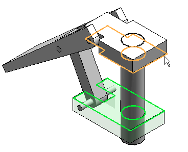
Create sensors.
In PathFinder, click the Sensors tab
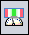
.Click the Minimum Distance Sensor
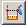
.From the Element Types list, select Surfaces.
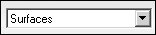
To measure between the top of the slider block and the bottom of the base block, select the two faces.
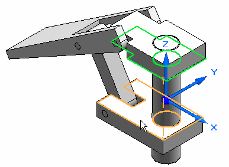
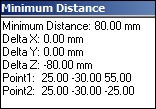
Close the Minimum Distance dialog box.
In the Sensor Parameters dialog box, enter the information as shown, and click OK. In the previous activity, when interference was found using the Motion command, the software determined a threshold value of 110.14. Click OK.
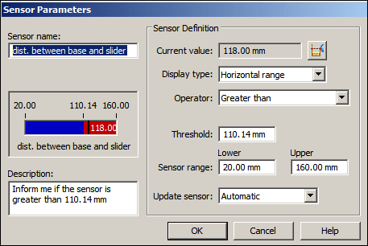
Notice that the sensor is added to PathFinder.
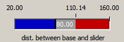
In Assembly PathFinder, click slider block.par, and then click the Mate Relationship with the 80 mm offset in the lower pane of Assembly PathFinder.
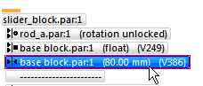
Edit the slider block offset value to 118 mm.
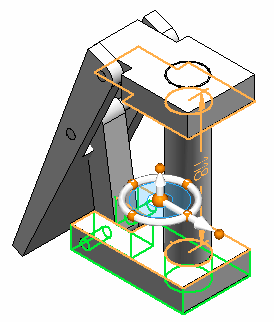
In PathFinder, click the Sensors tab.
Notice that the sensor shows the range is no longer valid.
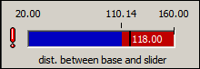
When a sensor is violated, an icon appears on the upper right corner of the screen.
Click the icon in the corner. Information is displayed. Click for more information. The sensors document in PathFinder is displayed.
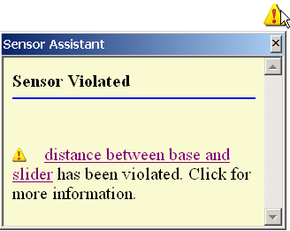
Set the offset value of the slider block back to 50.00 mm. Notice that the sensor returns to a valid state.
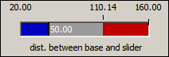
Answer the following questions:
-
Name three types of sensors.
-
Is the interface for sensors a tab in PathFinder?
-
How can you tell when a sensor has been violated?
-
Name three types of sensors.
The types of sensors are:
-
Minimum distance sensor
-
General variable sensors
-
Surface area sensors
Custom sensors and sheet metal specific sensors can also be created.
-
-
Is the interface for sensors a tab in pathfinder?
The sensors tab is located in pathfinder?
-
How can you tell when a sensor has been violated?
An attention icon will display. It must be turned on in Solid Edge Options>Helpers tab.